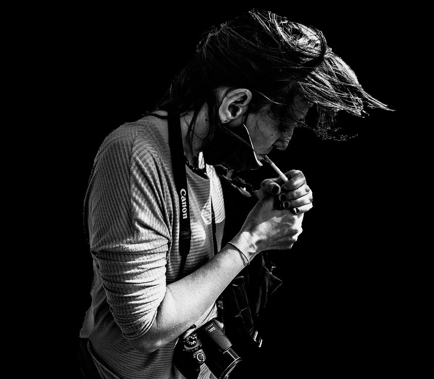

Nació en Buenos Aires el 14 de octubre de 1978. Estudió fotografía con varios maestros y de
manera autodidacta desde los 18 años. Actualmente trabaja como fotógrafa en la Casa Nacional
del Bicentenario - Ministerio de Cultura de la Nación Argentina y como fotoperiodista para
diversos medios de comunicación nacionales e internacionales. Además es Pedagoga Social con
orientación en antropología educativa, profesión que le permitió ampliar la mirada en las
comunidades afectadas por las desigualdades sociales y territoriales durante 15 años.
Participó de varios colectivos fotográficos independientes, entre ellos Argentina Arde y La
Red de acción fotográfica y de publicaciones fotográficas para el Museo Etnográfico, Museo
del Grabado, el Centro de Arte Sonoro, la Universidad de Hurlingham, Sipreba, con una
mención del Mercosur en el Concurso fotográfico “Personas Mayores: Derecho al Cuidado” y en
el proyecto Onewater de la Unesco. Desde el año 2019 registra en los territorios las
problemáticas vinculadas a la tierra y al agua a causa del extractivismo, la megaminería y
la explotación de litio en distintos lugares de Argentina.
Es coautora del libro “La ruta del litio: Voces del agua” editado por Chirimbote.